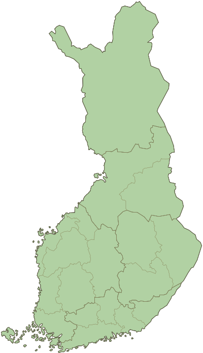

Finland Trip

The People of Finland
My Finland trip first took me to the city of Edinburgh, Scotland to visit my sister who was studying
there at the university of Edinburgh. Edinburgh has a population of a shade over 450,000 and a
population density of 4730 per square mile. It was a city founded prior to the 7th century AD,
so it is a city with a very rich history. The people there of course spoke english, so there wasn’t
much of a culture shock. However, I did notice the people were mostly very polite, and the culture
seemed to be more environmentally conscious than the United States.
After 5 days of tourist stops in Edinburgh, I made my way to Helsinki, Finland. Helsinki has an urban
population of around 1.2 million people and a population density of 4,700 per square mile. With a
similar population density as Edinburgh, the city had the same feel of not being very crowded. Founded
in 1550, it is a relatively “newer” city as compared to Edinburgh. This makes it older than the
United States, however.
I noticed the people of Helsinki were more quiet and reserved than people in the United States. If
you ask a Finn “How are you doing today?” out of the blue, they will stare at you like you are crazy.
Finnish people talk to each other when they have something utilitarian to say, such as “Has the bus come by yet?”.
Finnish people are also very proud of their country and if they have a chance, they will ask how you
enjoy their country. The Finnish people I spoke to were happy to hear how much I enjoyed the weather.
The people in Helsinki, like the people in Edinburgh were definitely environmentally conscious. In Helsinki,
I saw many trees that had wooden boards surrounding their trunks to protect them in areas where there was
construction, something I don’t think you would see in the United States. There was also a very nice small
nature preserve on an island I visited where there were ducks and squirrels, and the Finnish people who were
there were very respectful of the animals space. I haven’t seen anything like that in the United States.
Automation in Finland and the World
Automation in the manufacturing sector is defined by the International Society of Automation as “the
creation and application of technology to monitor and control the production and delivery of products
and services.” In Finland, there is an ABB factory that uses robots and automation to build much of their
products. It is surprising to note that the cost for one of the robots they use is only around €40,000.
The robot can perform a task in about 40 seconds, what would take a human around 3 minutes. This increase
in production pays for the robot in about a year. The robot can essentially produce enough extra to pay
the salary of an engineer in the company.
Automation is here to stay, and with the increase in automation, in my opinion that it is important for
cultures to adapt to this change in a smart way. With more robots doing jobs, less people will be required
to be a part of building a product. We must be careful that this change doesn’t lead to more social problems,
such as wealth inequality, which is already a major problem in the United States. In Finland, wealth inequality
is not as big of a problem, so this social issue may not be a problem for them going forward. I think that
automation in the manufacturing sector is capable of increasing the quality of life of a culture, just like all
technology, but only if it is used the right way.